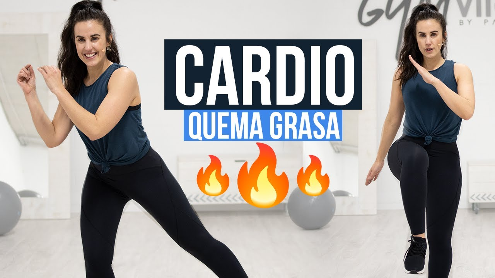

¿Por qué es importante hacer ejercicio? Lo más probable es que hayas oído incontables veces que hacer ejercicio es "bueno para ti". Pero ¿sabías que, en el fondo, también te puede ayudar a sentirte bien? Hacer la cantidad adecuada de ejercicio físico puede aumentar tu nivel de energía y hasta ayudarte a mejorar el estado de ánimo.
Licenciada en Ciencias de la Actividad Física y el Deporte, y con más de 8 años de experiencia en el sector. Patry es definida por sus clientes como una excelente y divertida profesional, capaz de motivarles mientras prioriza la técnica y la eficacia de los ejercicios. Su lema es : el deporte como medicina.
El ejercicio físico es bueno para todas las partes del cuerpo, incluida la mente.
El ejercicio físico hace que el cuerpo genere sustancias químicas que pueden ayudar a una persona a sentirse bien. El ejercicio físico puede ayudar a las personas a dormir mejor. También puede ayudar a algunas personas que padecen una depresión leve o que tienen baja autoestima. Además, el ejercicio puede dar a la gente una verdadera sensación de logro y orgullo por alcanzar determinadas metas, como batir un récord personal en 100 metros llanos.
Es una buena idea hablar con alguien que entienda sobre este tema, como un entrenador o un experto en preparación física que trabaje en un gimnasio. Puede diseñar un programa que sea adecuado para ti y para tu nivel de preparación física.